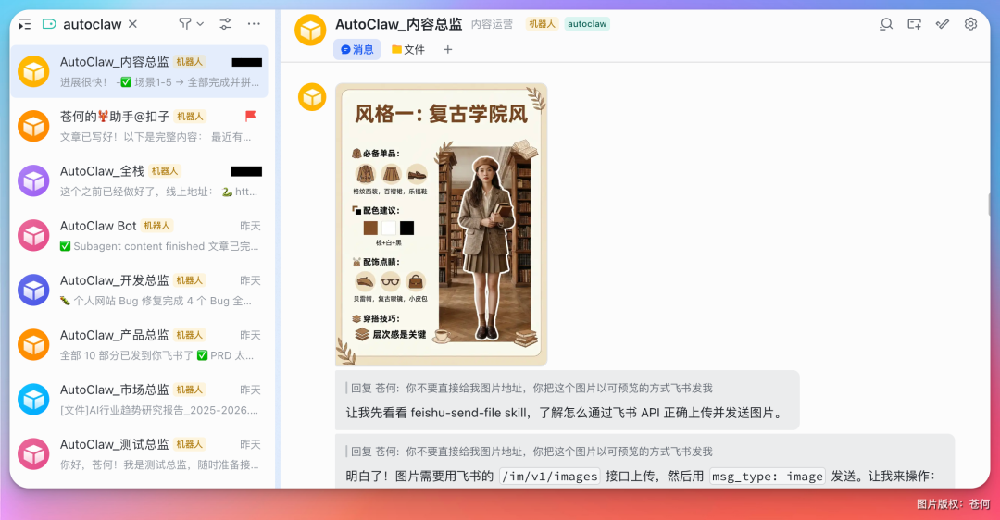
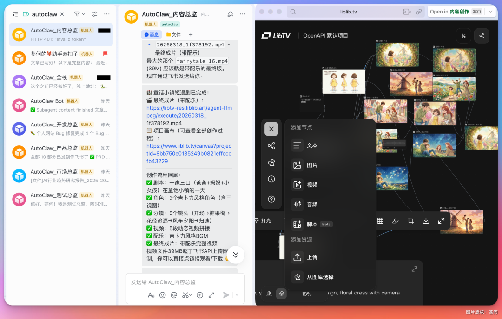
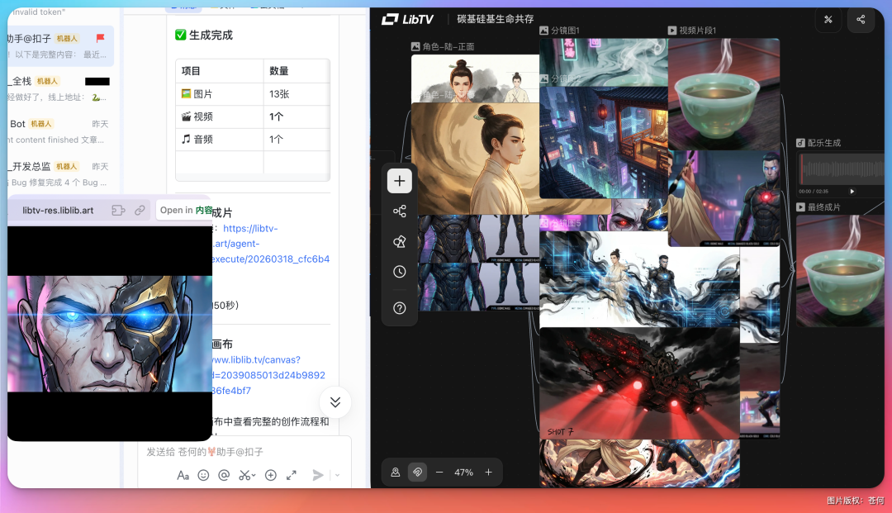
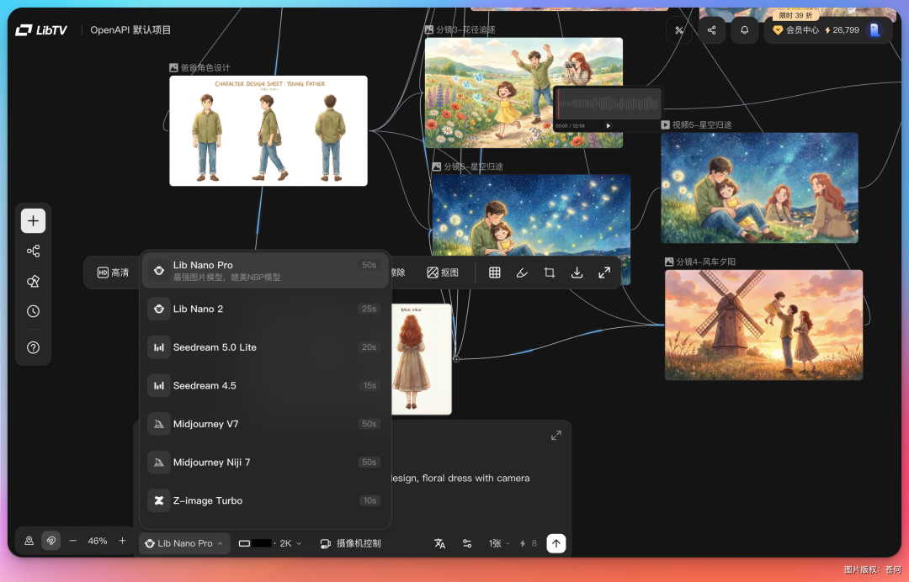
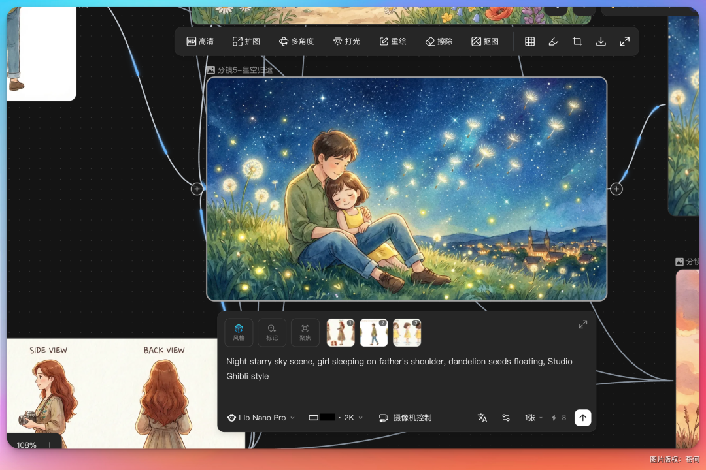
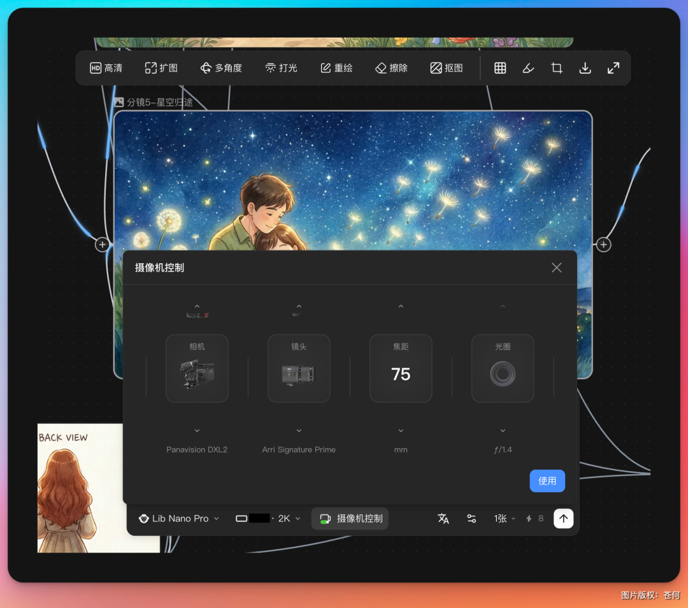
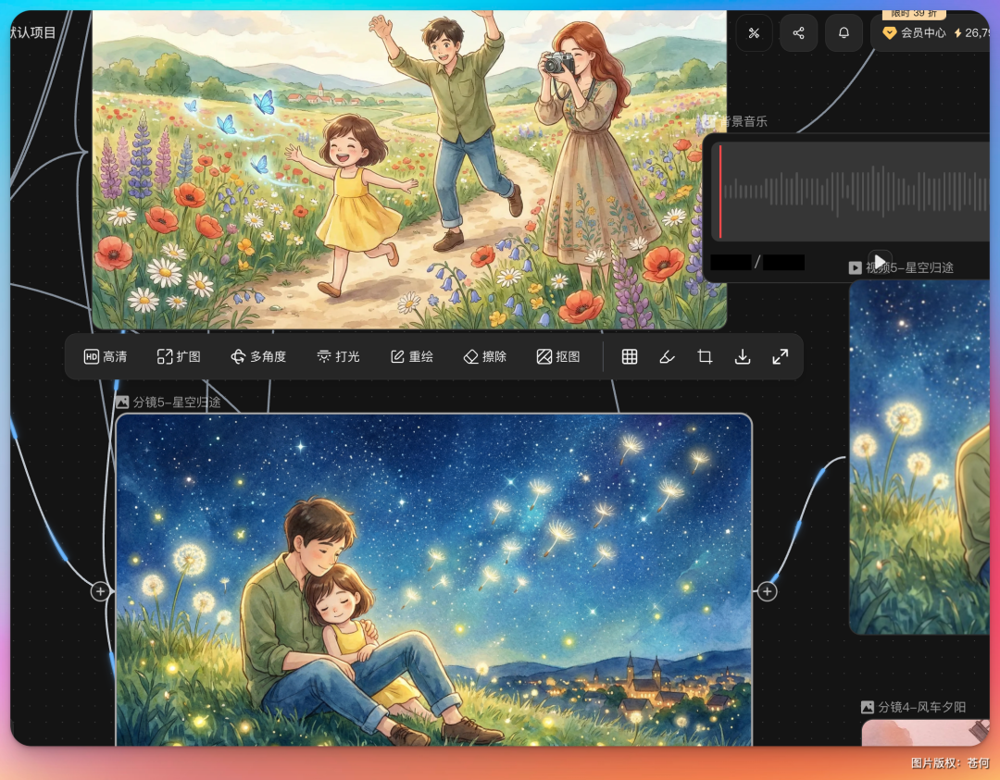
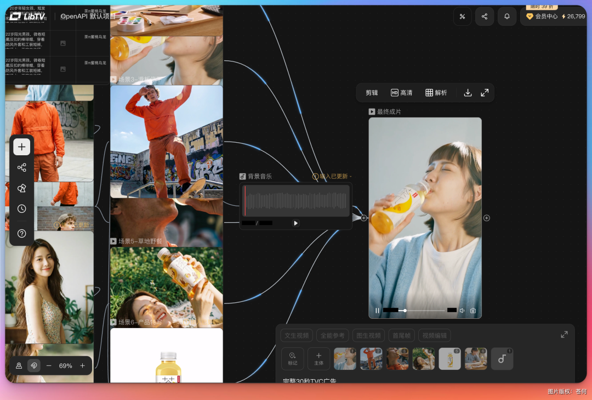
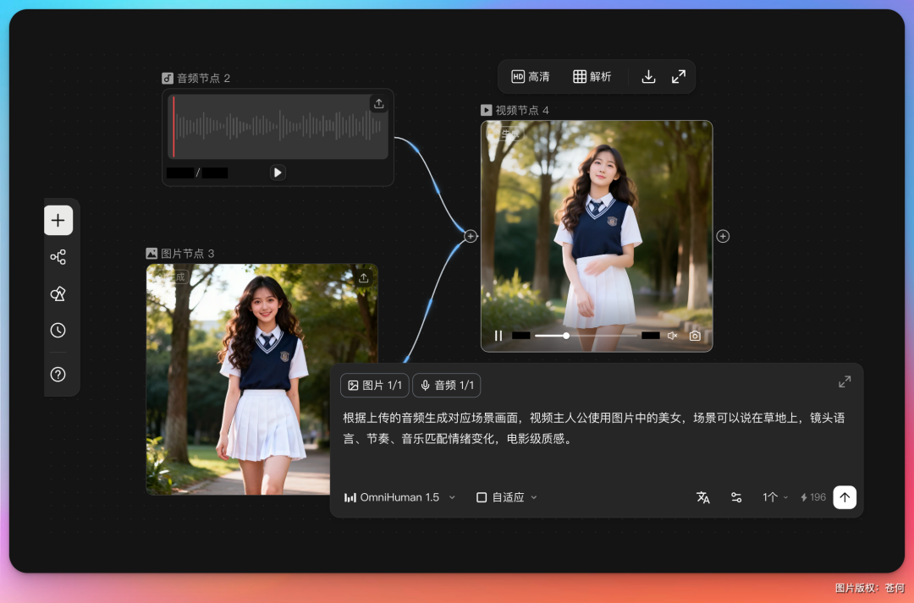
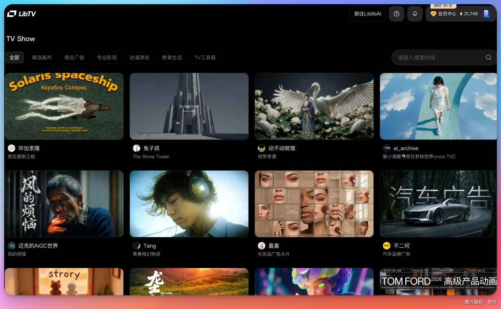

大家好，我是苍何。
我的 Agent🦞团队，继续进化，特别是内容总监🦞的进化速度最为惊人。

他现在除了掌握小红书、公众号等的文章创作，还学会了图片、音频、视频的全域创作。
之前他做视频，基本就是单个镜头的生成，画面可以，但你要说把它们串成一个完整的故事，那还差得远。
今天我给他装了一套新的 Skill，叫 LibTV。
装完之后，好家伙，这货直接开窍了。
给他一个主题，他自己就能编排工作流，从写剧本、拆分镜、生成画面到剪辑配音，一条龙全给你安排上。

除了直接给视频成品，可以看到在 LibTV 平台无限画布内有 Agent 完成的所有素材及工作流编排。
而且生成出来的画面，角色一致性、镜头连贯性，比之前强了不止一个档。
我随手让他做了一个短片，你们感受一下：
提示词：帮我生成 1 分钟的短漫剧，主题为未来碳基生命和硅基生命共存的场景，国风动漫风格
这个视频的所有工作流，全部由 Agent 自主调用 LibTV Skill 完成，剧本、分镜图片、分镜视频，以及最后的合成，都一气呵成。

说实话，我最喜欢这个配乐，还真不错啊。
同样让他做一个短漫剧，主题为一家三口在童话小镇快乐玩的场景，吉卜力动漫风格，效果如下：
打开这个视频的无线画布，看到支持生图生视频的模型非常全面，可以说汇聚全球顶尖的模型了。

我看了 Agent 会自主去选择参照图保持主体及人物场景的一致性。

如果觉得哪个节点不符合条件，人类也可以凭借自己感觉手动去调整控制，比如摄像机镜头、焦距、光圈等，都可以调整。

对于分镜图可以对图片进行扩图、多角度、打光、重绘、抠图等。

当然🦞也能自己根据要求自己选择，人类可以凭自己的经验指挥你的龙虾或者手动调整。
这个视频不能说很完美吧，比如说最后来了两个妈妈，直接就把我吓了一跳，不过整体画面的唯美，我好喜欢啊。
如果你看到了这里，那恭喜你，我想给你看个我用内容总监🦞一句话做出的茶π的 TVC 广告。
我只给了一张产品参考图，以及一句话，我就去打爆竹去了。
他做好了飞书发到我手机提醒，还给了我个画布链接，点进去，也能看到整个创作的工作流。

这样的片子，要放以前，请演员，摆道具，拍视频，配音剪辑，少说也得好几天吧，成本没个几万搞不定吧？我现在 5 分钟，一次直出，看了下成本，算下来差不多几块钱。
真是有点惊艳到我。
我还上传了一个我喜欢的音乐和一张照片，通过无限画布，让他帮我直出一段 MV。

运镜和人物一致性都比较不错。
我还让我的运营总监🦞帮我做了个守株待兔的漫画视频：
我家小兔寨子这两天想听姜饼人的故事，我直接就让他做个视频给小朋友看吧：
说实话，要不是他们这个 LibTV 今天🔥了，一堆人在用，现在开始排队生成有点儿慢了，我还能玩的更嗨。
我觉得 LibTV 大概率是现阶段最适合专业创作者和 Agent 的 AI 视频工具了。
玩了一整天，我也去了解了一下这个产品的背景。
LibTV 是 LiblibAI 做的第一款 AI 视频产品，说白了就是他们看到了一个问题：现在市面上的 AI 视频工具，要么太简单，Agent 能聊但做不出复杂作品；要么太复杂，纯节点工作流搭起来成本贼高。
更烦的是，你生成完一个镜头，想微调一下？不好意思，导出去，换个工具，再导回来。流程被切得稀碎。
所以他们从第一天开始就做了一个我觉得很有意思的设计：「双入口」。
一款产品，两扇正门。
一扇给人类创作者，就是你看到的那个无限画布，节点式工作流，从剧本到分镜到成片，所有精细控制都在里面。
另一扇给 Agent，通过 Skill 接口直接理解任务、调用模型、自动编排工作流。
这也是为什么我的🦞装上 Skill 之后就能直接干活，因为这个产品本来就是给他准备了一扇门的。
再说说模型，LibTV 集成了全网主流的图像和视频模型，而且据说马上会上线 seedance2 的独家入口，这个还是挺期待的。

还有一个让我比较意外的点是价格。
视频创作最费钱的就是反复试，创作者管这叫「抽卡」。LibTV 的定价确实挺狠的，年卡最低 3.9 折，部分模型叠加优惠算下来 2 折多。而且订阅就送 150 条可灵 O3 加 150 条可灵 3.0，一共 300 条最高等级的视频额度，量大管饱。
官网：https://www.liblib.tv/GitHub：https://github.com/libtv-labs/libtv-skills
当然了，也得说说不足的地方。
LibTV 还在内测阶段，体验下来还是有一些小 bug 的，偶尔会遇到生成失败的情况。而且今天用的人太多了，排队等生成的时间明显变长，着急的时候确实有点上头。
另外 Agent 端的 Skill 还在持续开发中，现在已经有短漫剧、爆款视频复刻、音乐 MV 这些，但更多场景的能力还没有搞好。
不过话说回来，这东西的潜力是真的大。
他们提了一个观点我还挺认同的：「过去 20 年，所有软件都是先做 GUI 给人用，做大了再开放 API。但 Agent 时代，API 从第一天起就和 GUI 同等重要。」
这其实就是软件长出了「第二扇门」。
以前产品只研究怎么让人更容易上手，现在还得同时研究怎么让 Agent 更容易调用。LibTV 算是在视频创作这个领域，第一个吃螃蟹的。
我自己的感受是，真正决定一个作品好不好的，还是人的审美和判断。AI 再强，它生成的东西如果没有人的选择在里面，可能技术上啥毛病没有，但就是没有灵魂。
而 LibTV 做的事情，就是让人负责选择和审美，Agent 负责执行和扩展。
人在创作，Agent 在学习，工具在进化，三件事同时发生。
这才是我觉得它真正有意思的地方。